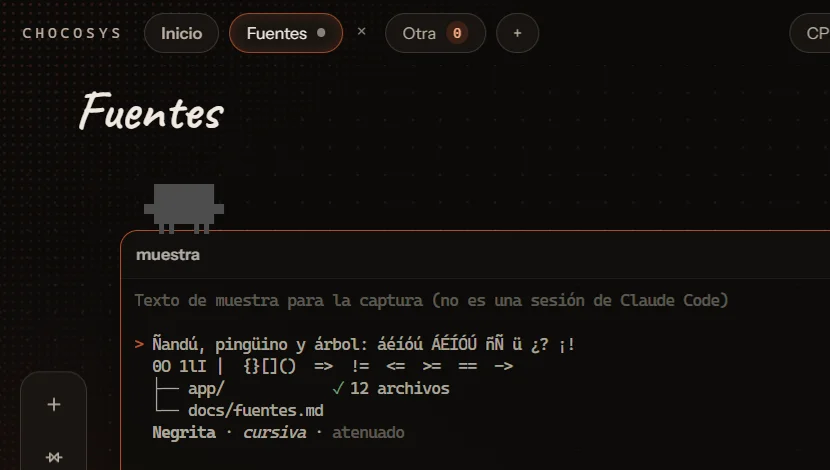

Todo lo que corre, a la vista.
Cada sesión trabaja en su ventana. Las que terminan o te preguntan algo se marcan, y las que siguen trabajando no te interrumpen.
Esperando 1
Trabajando 2
En la puerta 1
Terminado 1
- 1Escribir el informe · haikupendiente
- 2Guardarlo en la carpeta del trabajopendiente
- 3Anotarlo en el CRMpendiente
- !Puerta crítica: revisar antes de enviarpendiente
- 5Enviar el correopendiente
Maqueta animada con datos inventados. Las capturas de más abajo son de la app real.
Míralo andando.
Cincuenta segundos: sesiones, espacios, temas, flujos con su puerta, la central y una tarea programada. Los subtítulos van en la imagen y el audio son solo efectos.
No se pudo cargar el video. Ábrelo aparte (MP4, 5 MB).
Reconstrucción de la interfaz con datos inventados.
Qué hace
Terminales reales, no una imitación.
Cada sesión es una ventana con su propia terminal, la misma de Claude Code: le escribes, lees lo que hace y la mueves por el lienzo. Agrupas las ventanas en espacios (uno por proyecto, por ramo o por cliente), cada uno con su pestaña.
Si cierras la app, al abrirla de nuevo cada sesión retoma su conversación.

Recetas que se detienen donde decides tú.
Un flujo es una receta en un archivo de texto: etapas en orden (o en paralelo), cada una con su instrucción y su modelo. Entre etapa y etapa puede haber una puerta, donde el flujo espera tu revisión.
Cuando lo que sigue no se deshace (enviar un correo, emitir un documento), la puerta es crítica: se aprueba solo en la ventana, y ninguna sesión puede aprobarla por ti. Para probar una receta sin riesgo, la lanzas en simulacro.

- La bandeja
- Junta lo que te necesita primero: una pregunta, una puerta, una sesión que terminó. Ctrl+Tab salta a lo siguiente.
- La central
- Si la activas, una sesión que Chocosys abre al iniciar y queda siempre a mano, también desde el celular con Remote Control. Le pides un encargo, ella lo reparte en las sesiones que hagan falta y te avisa cuando termina.
- Tareas programadas
- Una orden, una sesión nueva o un flujo que corre a una hora, una vez o cada cierto tiempo. Decides si una tarea atrasada se corre al abrir la app o se salta.
- CRM básico
- Empresas, contactos, negocios en un embudo y actividades con su fecha. Trae plantillas de embudo según el tipo de negocio y guarda todo en una base local, en tu computador.
- Barra de comando
- Ctrl+Shift+K: una orden abre una sesión nueva;
@nombre: ordenle escribe a una que ya existe. - Segunda opinión
- Asesores con intereses distintos (caja, riesgo, operación) evalúan una decisión, se confrontan y entregan un veredicto.
Además: CPU, RAM y GPU con lo que consume cada sesión; un servidor MCP para que una sesión lea el estado, abra otras y lance flujos (aprobar puertas, no); fuentes propias para la interfaz y la terminal; y dos ediciones livianas, solo terminales o terminales con flujos.
Para quien tiene más de una cosa andando.
Una sesión ordena apuntes, otra revisa una planilla, otra espera que le respondas. En vez de diez terminales sueltas, las ves juntas y sabes cuál trabaja, cuál terminó y cuál te hizo una pregunta. Trabaja sobre las carpetas reales de tu computador, no sobre copias en otro lugar.
- Un estudiante con varios ramos
- Alguien que estudia y emprende
- Quien lleva un negocio chico
- Un ingeniero que apaga incendios
- Cualquiera con tareas sueltas
Tus datos se quedan contigo.
Chocosys no tiene servidor y no envía nada por su cuenta. Lo que guarda (sesiones, espacios, CRM, tareas) queda en tu computador, en %APPDATA%\consola-agentes\. Lo que escribes en una sesión viaja a Claude como en cualquier terminal de Claude Code.
Si algo falla, la app arma un reporte con rutas, correos y claves tachados. Lo revisas y lo envías tú, si quieres.
Cómo instalarla.
Hoy funciona en Windows 10 y 11, y se abre desde el código.
-
Lo que necesitas antes
Node.js 20 o más nuevo, y Claude Code instalado y con tu sesión iniciada: el comando
claudetiene que abrir en una terminal. -
Baja el código
Con Git, o con el botón Code › Download ZIP del repositorio.
git clone https://github.com/camiloalonsomerino-spec/chocosys.git -
Instala y abre
cd chocosys\app npm install npm startPara tener un instalador
.exepropio:npm run instalador.
En camino
- Una versión para Mac.
- Elegir tu plan de Claude (Pro o Max) desde la app.
Sin fecha todavía. Los avances quedan en el registro de cambios.
Sin fines comerciales.
Puedes usar, estudiar, copiar y cambiar Chocosys para fines personales, de estudio, de investigación o de una organización sin fines de lucro. Para un uso comercial hay que pedir permiso.
La licencia es la PolyForm Noncommercial 1.0.0. Por esa condición no es «open source» según la OSI: el código está abierto para leerlo y cambiarlo, pero no para venderlo. Detalle en el aviso.
¿Encontraste un fallo o tienes una idea? Abre un issue con texto y capturas.
In English.
Chocosys is a Windows desktop app that runs several Claude Code sessions in real terminals, groups them into spaces on a canvas and tells you which one needs you. It adds flows (YAML recipes with stages and gates you approve in the window), a central session that splits work across sessions, scheduled tasks and a small local CRM. The interface is in Spanish.
It needs Windows 10 or 11, Node.js 20+ and Claude Code signed in. Clone the repository, then run npm install and npm start inside app. A Mac version and choosing your Claude plan (Pro or Max) in the app are on the way, with no date yet.
Non-commercial project under the PolyForm Noncommercial 1.0.0 license. Source on GitHub.